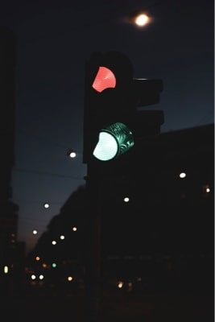
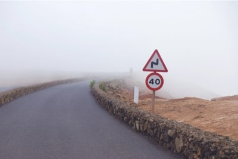
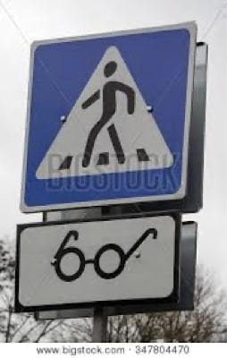
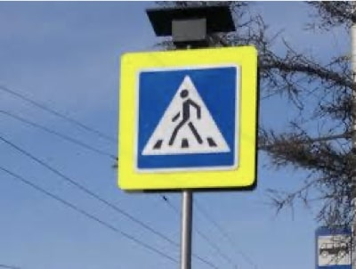
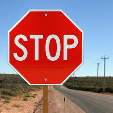
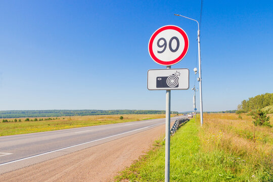
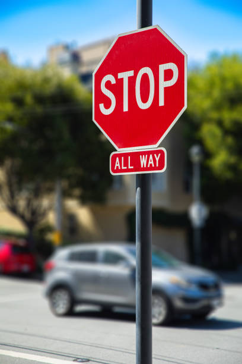

Input
Use curated samples, your own uploads, or the camera to detect road signs.
-

Traffic Light
Green signal suspended over a night-time avenue.
-
 Intersection Signal
Intersection SignalClassic red-yellow-green light at an urban junction.
-

Speed Limit
Reflective speed restriction sign under city lights.
-

Crosswalk Warning
Pedestrian crossing sign framed by autumn foliage.
-

Pedestrian Crossing
Marked crosswalk with bright zebra stripes in daylight.
-

Stop Sign
Weathered octagonal stop sign amid countryside structures.
-

Speed Limit
Limit 90 marker against a cloudy suburban sky.
-

Stop Sign
Crisp red stop sign with bold typography at a clear junction.
Drag & drop or browse a road sign image.
Output
Inspect detections, classes, and confidence in real time.
Select an image to analyze traffic signage.